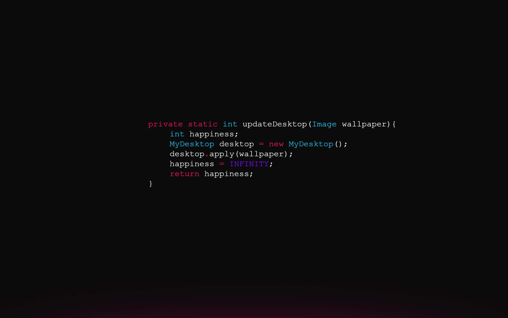

El mayor porcentaje de demanda laboral no satisfecha se encuentra en
el sector IT.
Actualmente quedan puestos de trabajo sin
cubrir por
falta de recursos humanos en Tecnología y Sistemas, ya sean
profesionales o no.
Este fenómeno se reitera desde
hace más de diez años, al igual que el
bajo porcentaje de mujeres empleadas en esa industria y de
personas con discapacidad por no ser accesibles las
propuestas de capacitación.